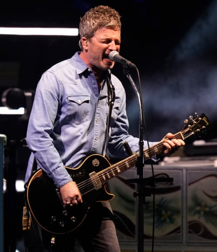

Swaggering, cocksure and incredibly loud, Oasis burst back on to the live music scene on Friday night with an accomplished – if ever so slightly distanced – debut gig on their reunion world tour.
Playing Cardiff’s Principality Stadium, the six-piece impressed at the start of what is arguably the most anticipated tour of the century, focusing overwhelmingly on songs from their 1990s heyday – only one song, Little By Little, was taken from their final four albums.
For years it looked as if Liam and Noel Gallagher would never patch up their fractious fraternal relationship. A backstage bust-up in 2009 brought Oasis to an end, after a 16-year career in which they became the pre-eminent British rock’n’roll band, and the Gallaghers continued to snipe at each other in the press and social media in the following years – most memorably with Liam dubbing Noel a “potato”. Even when Oasis announced a reunion in August 2024 – “The guns have fallen silent. The stars have aligned. The great wait is over” – some fans wondered if another ruction between the brothers would scupper the plans.
But following support slots from Britpop peers Cast and Richard Ashcroft, Oasis did indeed appear, with Liam’s arm around his brother as they stepped out on stage. They kicked straight into gear without a word to the crowd, playing Hello, the song that begins (What’s the Story) Morning Glory?, their 18-times platinum album which is outsold in the UK only by Queen and Abba’s greatest hits.
“Because we need each other, we believe in one another”, Noel sang on the second track, Acquiesce: a statement of unity that inspired delirious moshing and crowd surfing. But the actual relations between the Gallaghers were relatively frosty, with little acknowledgment of each other thereafter aside from a brief pat on the back at the end, and original guitarist Paul “Bonehead” Arthurs stationed between them on stage.
The Gallaghers were backed by Arthurs, the rhythm guitarist on their era-defining first two albums Definitely Maybe (1994) and (What’s the Story) Morning Glory? (1995), plus 1997 follow-up Be Here Now, which was less critically acclaimed but still enormous in terms of sound and commercial success. More recently, Arthurs had played with Liam’s solo band.
Arthurs, who was successfully treated for tonsil cancer in 2022, was replaced in Oasis in 1999 by Gem Archer, who also features in the new lineup having played with both Liam and Noel during their solo careers. Andy Bell, the co-founder of Ride – Oasis’s labelmates on Creation Records – and another 1999 Oasis appointee, played bass. The American musician Joey Waronker, known for his work with Beck, REM and Radiohead’s Thom Yorke, was on drums, having recently collaborated with Liam Gallagher on his 2024 album with Stone Roses guitarist John Squire.
‘This one is for all the people in their 20s who have never seen us before’ … Noel Gallagher performing at the Principality Stadium, Cardiff.Photograph: Jordan Pettitt/PA
Noel took the lead on a three-song run of Talk Tonight, Half the World Away and Little By Little – the only post-millennium song, from 2002’s Heathen Chemisty – in the middle of the set, with Liam bringing his trademark sneer and brio back for D’You Know What I Mean?, which led into another Be Here Now song, Stand By Me.
Thereafter it was a return to the middle of the mid-1990s, with one-off singles and B-sides such as Whatever and The Masterplan, and a run of the band’s very biggest hits including Live Forever, Rock ’n’ Roll Star, Don’t Look Back in Anger, Wonderwall and Champagne Supernova.
The latter-day Oasis albums aren’t as well loved as the first three, but they certainly contain songs fans might have expected to hear including Stop Crying Your Heart Out, Lyla, Songbird and Go Let It Out. But there were no curveballs or deep cuts, and Oasis delivered the crowdpleasers most fans were hoping for.
There were also tributes to the late Portuguese footballer Diogo Jota, who died yesterday in a car crash at the age of 28: he was well known to British fans, having won the Premier League and FA Cup with Liverpool. Cast dedicated their own football anthem, Walkaway to him, and an image of Jota was displayed during Oasis’s performance of Live Forever.
For a famously gobby band, there was relatively little stage banter, though Liam beseeched the crowd at one point: “I want you to turn around and put your arms around each other … and jump up and fucking down.”
He also made a brazen reference to the pricing scandal that made headlines when tickets went on sale: a “ dynamic pricing ” mechanism meant that the popularity of the tickets drove up the cost, prompting anger from fans and promises from culture secretary Lisa Nandy to look into the practice. “What’s happening? Everyone having a good time yeah? Is it worth the £4,000 you paid for a ticket?”, Liam asked the crowd.
Noel meanwhile thanked the band’s younger fans as he began the encore with a rendition of The Masterplan: “This one is for all the people in their 20s who have never seen us before who have kept us shit hot for the last 20 years.”